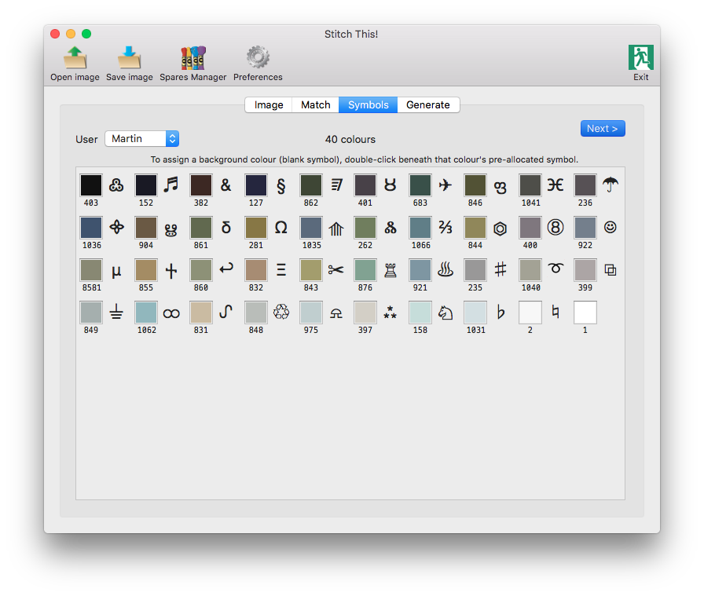

Symbols

Colours are displayed in 'luminance' sequence (i.e. darkest to lightest). From experience, when you're looking for a thread whilst working, you would probably look for it by its shade. The thread organiser card is arranged in this sequence. When shopping, though, you want them listed in colour number order - which is why the Shopping List is output in that sequence.
This tab is largely for information, but there are a couple of ways in which you can tailor the symbols that will appear on your generated output:
- You can use a predefined symbol set. From the User dropdown, select the name of the person whose symbol set you want to use. If you haven't already set up any symbol sets, and want to build your own, visit Preferences | Symbols. Each user you set up can have up to fifty symbols of their own choosing. If you opt not to create your own symbol set(s), you can leave it to Default - and the app will select a set of symbols from the large number at its disposal.
If you do utilise a pre-defined symbol set, and the number of colours in the image is more than there are symbols for in your selected set, all those in your defined set will be used, and the difference will be made up from other available symbols.
If, however, you haven't set up a symbol set, but still want different symbols from the ones the app has selected, you could try clicking on the drop-down and selecting 'Default' again - this should allocate a different set.
- Also, you can choose a 'background colour' - i.e. the colour on the output which corresponds to an empty square on your page's grid. This might usually be white on the image, or perhaps the predominant colour (e.g. sky, ground, etc) which you might opt not to work, but to leave the canvas to show through. You can do this by locating the colour in the symbols array and double-clicking under the corresponding symbol. Note in the above screenshot, the final colour, white, has been designated the background colour, and therefore has no symbol alongside it.
Once completed, you have done all the necessary pre-processing to enable the output to be generated.
You're now ready to Generate your project output PDF.